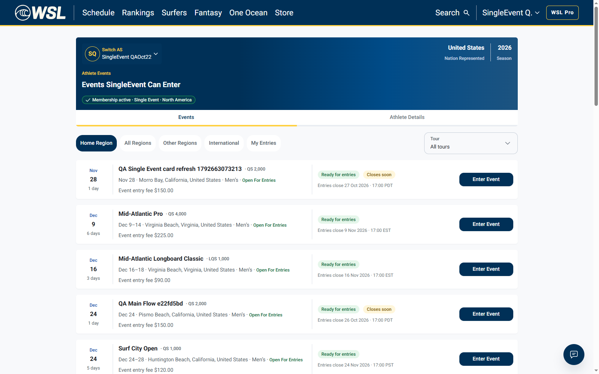
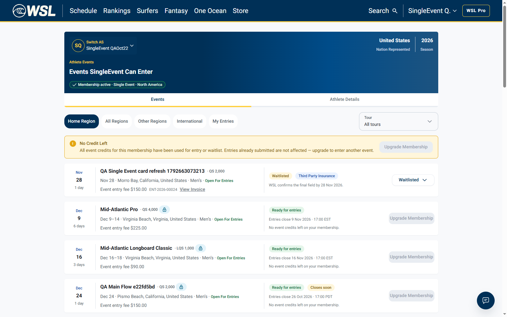

The original card changed from Enter Event to Waitlisted in about 2 seconds after registration in another tab, without refresh or navigation. Entry action removed; one saved QA entry.


# WSL-9578: Single Event membership card refresh - 22 October 2026 Result: PASS. The remaining Single Event membership variant is verified on dev. Regional membership passed in the prior 21 October execution. The issue can proceed to Ready for UAT. ## What happened A real active Single Event member kept the Events list open in tab 1. Tab 2 submitted the event registration through the actual form. Without refreshing or navigating tab 1, the same event card changed from Enter Event / Ready for entries to Waitlisted and removed the entry action. The first captured Waitlisted observation was 1.935 seconds after the registration response (an observed interval, not an SLA guarantee). ## Fixture and correlation - Environment: dev, app.dev.worldsurfleague.com / api.dev.worldsurfleague.com. - Membership: 01a1630b-1cd8-707f-9c7c-8a71e5c34fef, productCode=single_event, status=active before registration; valid to 2026-12-31. - Controlled test account: qa.singleevent.1792663021090@btj5keea.mailosaur.net; athlete 01a1630b-12b6-7004-99ae-77c386720fb4. - Membership Stripe test PaymentIntent: pi_3UTIkJHma49jszOG1LBUNQfN, status=succeeded, livemode=false. This is fixture setup, not an event-fee charge. - Event: 01a1630b-b60d-7237-80f5-8147e8b8769f, QA Single Event card refresh 1792663073213. - Registration: HTTP 201 at 2026-10-22T09:58:49.969Z; entry 01a1630c-9094-7083-96f1-33b0632516bd, reference ENT-2026-00024; chargeStatus=requested. - Canonical athlete page: https://app.dev.worldsurfleague.com/athlete-registration/athletes/01a1630b-12b6-7004-99ae-77c386720fb4. The legacy Events URL redirected there before the observation baseline. The canonical URL was unchanged afterward. ## Actual steps 1. Prepare a fresh synthetic adult account, four signed documents, a paid Single Event membership and an active saved Stripe test Visa through supported APIs and real test-mode Stripe confirmation. No direct database activation was used. 2. Create one isolated QA event, supply the required rating, open entries, and verify entry options accept the Single Event athlete. Setup is API-driven and is not presented as recorded UI registration. 3. In tab 1, open the athlete Events list and retain the mounted card. Screenshot 01 shows Membership active · Single Event · North America and the Enter Event button on this event. 4. Open this event's registration form in tab 2 using the same browser context/account. Submit Event Registration through the real UI. HTTP 201 returns ENT-2026-00024. 5. Return to tab 1 without reload. Record the same card while the app re-reads its event data. A captured GET /events response changes the card's entry from null to waitlisted, with actions=[]. 6. Observe Waitlisted / Third Party Insurance and the entry reference on the original card. Enter Event/Register is absent. mountedWithoutNavigation=true; before and after URLs are identical. 7. Verify the manager roster contains exactly one athlete entry for this isolated event and the saved entry UUID matches the registration response. No Confirm & charge was run. ## Checks - PASS: Active Single Event membership confirmed before entry - PASS: Mounted event card initially offers entry action (current label Enter Event) - PASS: Actual registration submitted from another tab - PASS: Original list was not refreshed or navigated - PASS: Same card changes to Waitlisted - PASS: Entry action removed from original card - PASS: One saved entry in manager roster ## Recorded evidence - events-list.webm: actual Events page before entry and its mounted update afterward. - registration.webm: actual registration form submission and entry confirmation. - 01-single-event-before.png: active Single Event membership and original Enter Event action. - 04-single-event-without-refresh.png: same card now Waitlisted, without the entry action. - results.json: UI snapshots, live event-read responses, registration result, API readback and manager roster. - fixture-summary.json: actual membership product/state and test-mode Stripe setup evidence. ## Harness note and limits The first assertion counted only buttons literally named Register and produced a false harness failure. The current UI calls this action Enter Event (API code enter_event). The retained screenshot, recorded text and contemporaneous API response prove the entry precondition. The assertion was corrected to support both labels; the same registration was not submitted again. Initial assertion results are retained separately. This verifies the mounted card after waitlisting for a Single Event membership. It does not certify confirmed/selected-state updates, payment recovery, reminder emails, or Single Event credit accounting across multiple entries. Regional coverage is linked from the previous QA report rather than claimed as rerun today. Fixture creation and membership payment were API-driven; the two-tab event entry and card observation were actual browser actions. No real money, global settings, deployment or database changes were used.
Report · Live UI/API evidence · Membership fixture evidence · Original label assertion diagnostics